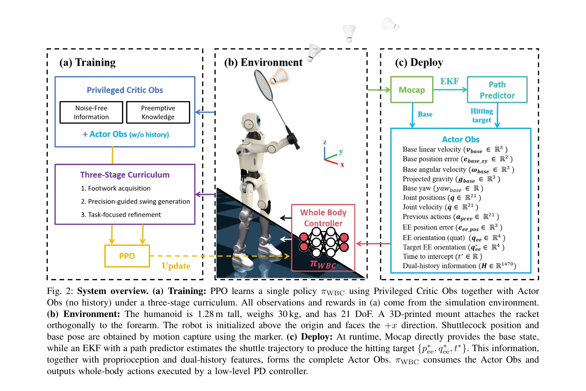
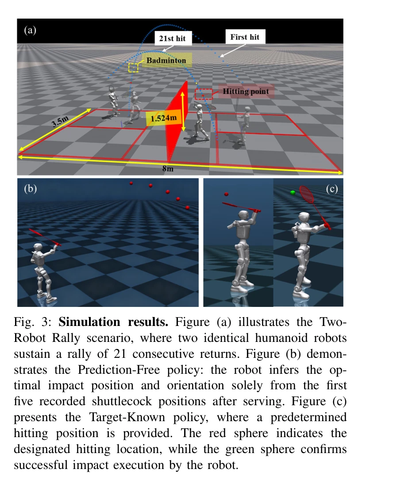

저자: Chenhao Liu, Leyun Jiang, Yibo Wang, Kairan Yao, Jinchen Fu, Xiaoyu Ren | 날짜: 2025-12-09 | DOI: 10.48550/arXiv.2511.11218

Fig. 2: System overview. (a) Training: PPO learns a single policy πWBC using Privileged Critic Obs together with Actor
이 논문은 다단계 강화학습 커리큘럼을 통해 휴머노이드 로봇이 배드민턴을 하도록 학습하는 통합 전신 제어기를 제시하며, 시뮬레이션과 실제 로봇 모두에서 1초 이내의 반응 시간으로 19.1 m/s의 셔틀콕 속도를 달성했다.

Fig. 3: Simulation results. Figure (a) illustrates the Two-
Fig. 2: System overview. (a) Training: PPO learns a single policy πWBC using Privileged Critic Obs together with Actor
총평: 이 논문은 휴머노이드 로봇의 고속 동적 상호작용 능력을 크게 진전시키며, 잘 설계된 3단계 커리큘럼과 실제 배포 성공이 인상적이다. 다만 예측 없는 변형의 실제 검증 부족과 현재 제한된 시험 환경이 향후 개선 과제이다.